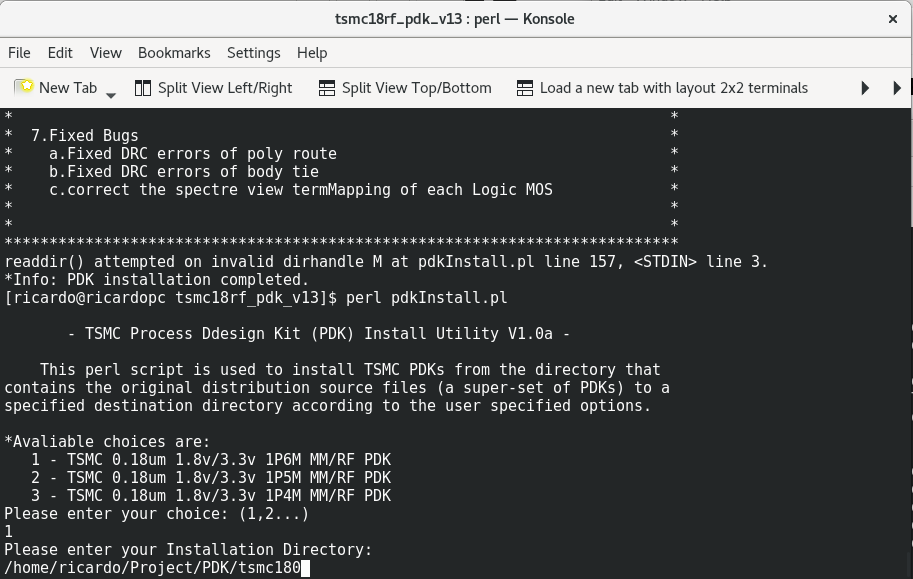
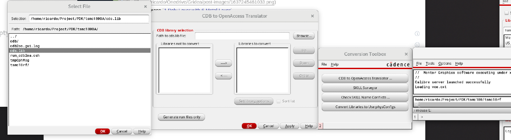
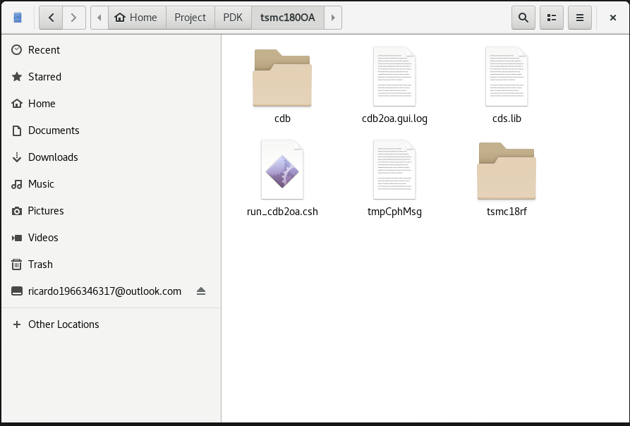
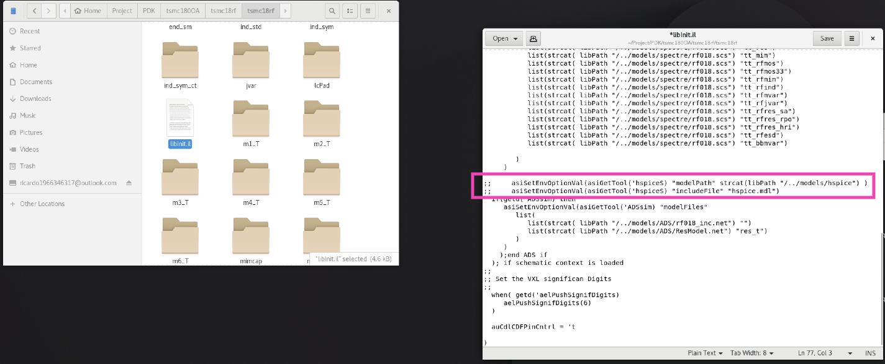
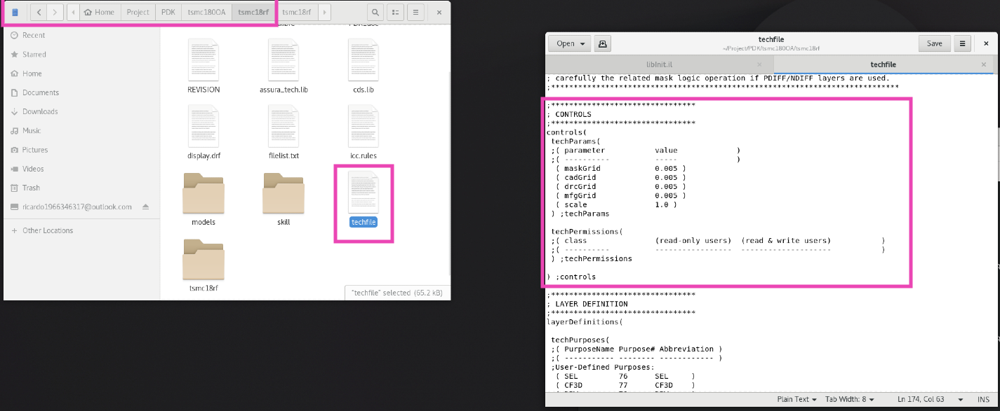

Add PDK for Cadence IC617
No PDK no life. If you have used Cadence or other EDAs for PCB design, with symbols and footprints you can draw your schematics and PCB. So does IC617.
Now I will try to install TSMC 180nm RF as an example.
Download and extract the files
The shared tsmc18rf PDK downloaded from website is divided to several compressed files. If they are .rar type,
unar xxx.part01.rar
Enter your workspace and install PDK
- Here my workspace is
/home/ricardo/Projectand my PDK folder is/home/ricardo/Project/PDK.
cd /home/ricardo/Download/tsmc180
perl pdkInstall.pl

Here 1P6M means 1 Poly Layer with 6 Metal Layer.
2. Convert CDB to OA. That is because Cadence after IC610 only supports PDK of OA. But take it easy. Cadence has a conversion tool.
# enter the father folder where you store your PDK in you workspace
cd /home/ricardo/Project/PDK
mkdir tsmc180OA
mkdir tsmc180OA/cdb
cp tsmc180/cds.lib tsmc180OA/cdb
# modify cds.lib in tsmc180OA/cdb
# delet all lines and add the CDB PDK path pointing to pdk
DEFINE tsmc18rf /home/ricardo/Project/PDK/tsmc180/tsmc18rf
# use the conversion tool to convert CDB to OA
cd /home/ricardo/Project/PDK/tsmc180OA
virtuoso&
Click tools->Conversion Toolbox->CDB to OpenAccess Translator and select the cds.lib which is modified in OA path.

Then you will see a folder called tsmc18rf generated in tsmc180OA.

And copy the folder to merge the same name folder tsmc18rf to tsmc180.
cp /home/ricardo/Project/PDK/tsmc180OA/tsmc18rf /home/ricardo/Project/PDK/tsmc180
- Go to
/home/ricardo/Project/PDK/tsmc180/tsmc19rf, editlibInit.iland commithspiceSusing;;.

*Actually I do not know why to commithspiceS, but it do work well after I add the PDK in Cadence with uncommitedlibInit.il. * - Cut and Passte “CONTROLS” section to the
fistsection inteckfile
 - Back to workspcae and run
virtuoso&. - Add lib to
Tools->Library Manager. - Enjoy it!